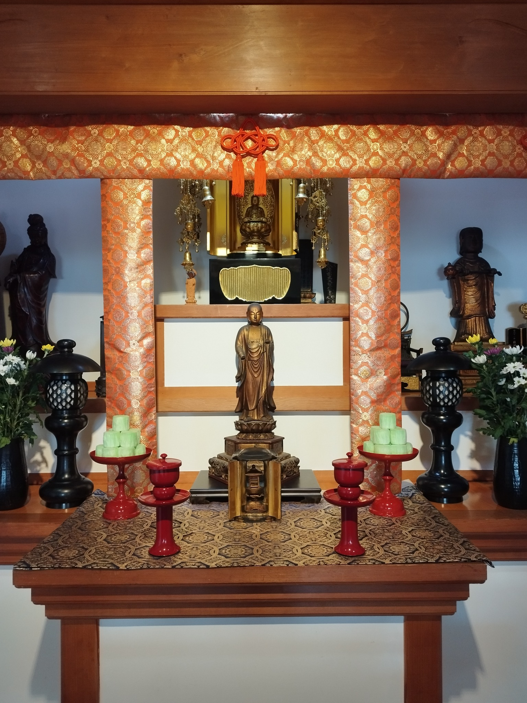

ご葬儀
臨済宗の作法に則り、故人を偲ぶ大切な時間を丁寧にお勤めします。
法輪山 地蔵寺は、山梨県富士吉田市上吉田にある臨済宗妙心寺派の寺院です。本尊は延命地蔵菩薩。山梨県の調査報告では、下吉田の月江寺の末寺で、天正5年（1577）に雪峰和尚が開基したと伝えられています。
長い年月のなかで、葬儀や法要だけでなく、地域の人々が集い、学び、心を寄せる場所として歩んできました。

臨済宗の作法に則り、故人を偲ぶ大切な時間を丁寧にお勤めします。
四十九日、一周忌、年回忌など、ご家族の節目に合わせてご相談いただけます。
墓地・ご納骨・永代供養・無縁仏についてもご相談を承ります。
大切な家族であるペットのご供養についても承ります。
ご葬儀、四十九日、一周忌、年回忌など、仏事についてご相談を承ります。内容や場所などは、それぞれのご事情を伺いながらご案内します。
※対応内容・出向範囲・お布施等は寺院へお問い合わせください。
ご相談はこちら →墓地、ご納骨、ご供養に加え、永代供養、無縁仏についてのご相談も承ります。また、大切な家族であるペットのご供養にも対応しております。詳しくは寺院へお問い合わせください。
※区画・費用・空き状況等は未掲載です。公開情報が決まり次第追加できます。
四季の移ろいとともに、檀信徒の皆さまと祈りを重ねる一年。
4日〜 年賀挨拶廻り
16日 檀信徒年賀御墓参り
新しい年の安寧を願い、檀信徒の皆さまとともに一年の歩みを始めます。
18日〜24日 春彼岸棚経廻り
春の彼岸に、ご先祖さまへ感謝を捧げ、各家をお参りいたします。
3日 檀信徒新盆総供養
13日〜16日 御盆棚経廻り
ご先祖さまをお迎えし、新盆を迎える精霊とともに心静かに供養いたします。
20日〜26日 秋彼岸
実りの季節、ご先祖さまを偲び、静かに手を合わせる彼岸の一週間です。
※天候不順、その他やむを得ない事情により、日程を前後する場合、または棚経廻りを中止させていただく場合がございます。何卒事情をご賢察のうえ、ご理解賜りますようお願い申し上げます。
上吉田の歴史とともに、四百余年。
山梨県の調査報告では、雪峰和尚が開基したとされます。本尊は延命地蔵菩薩。月江寺の末寺と記録されています。
『甲斐国志』・社記に、諏訪明神（現・諏訪神社）の領地に建立されたと記されることが、県の調査報告に紹介されています。
地蔵寺本堂を使用して「上吉田学校」が開かれました。現在の富士吉田市立吉田小学校へとつながる歴史です。
富士山を仰ぐ上吉田の地で、祈りと供養を受け継いでいます。
ご葬儀・ご法要・墓地・ご供養・永代供養・無縁仏・ペット供養など、お気軽にご相談ください。
ご葬儀・ご法要・墓地・ご供養・永代供養・無縁仏・ペット供養については、お電話またはメールにてお問い合わせください。
0555-23-1197 に電話する